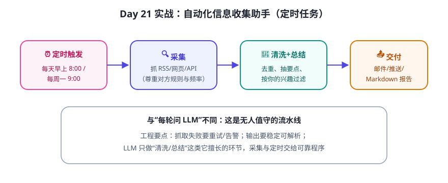

场景：每天早上，自动收集你关注的几个信息源（比如 AI 新闻 RSS/网页），过滤掉不感兴趣的，总结成 5 条要点，发到你的邮箱或存成 Markdown。这就是一个固定流程 + LLM 做理解的典型 Agent。
流水线设计

分步实现（建议顺序）
- 采集（不用 LLM）：用 Python 标准库/简单 HTTP 抓取 1–2 个 RSS 或页面，解析出标题列表。先不追求全，1 个源跑通即可。
- 清洗（规则）：去重、按关键词过滤（你关心的主题）。规则能做的别让 LLM 做。
- 总结（LLM）：把标题+摘要拼成一段，让模型“挑出与你兴趣最相关的 5 条，每条一句话”。
- 交付：输出 Markdown 文件（最简单的交付物）；进阶再发邮件/推送。
- 定时：先手动运行；稳定后交给系统的定时任务（macOS 用 launchd / 或 Python 里的定时循环，方法以官方文档为准）。
最容易踩的坑
| 坑 | 对策 |
|---|---|
| 抓取目标网站结构变了 → 解析崩 | 解析代码集中、带错误提示；失败时保留原始内容而不是静默失败 |
| 抓太频繁 → 被限流/封 IP | 降低频率、遵守对方 robots/条款、加延时；只抓必要内容 |
| LLM 总结“自由发挥” | 只让它基于给定内容总结，禁止补充外部知识 |
| 跑了几天没人看 → 坏了不知道 | 失败告警（至少打印日志 + 必要时推送）；先人工抽查一周 |
⚠️ 合规提醒：抓取他人网站前注意版权与使用条款，控制频率，不抓需要登录/受保护的内容。本课示例建议用你“有权使用”的信息源（如自己的订阅、官方 RSS）。
✍️ 今日练习（约 30–60 分钟）
- 选定 1 个信息源，写出它的“采集→清洗→总结→交付”数据流与字段格式。
- 实现采集 + 清洗两步（纯 Python，不用 LLM），先能打印出过滤后的标题列表。
- 把标题列表交给任意 LLM，用你写的“总结指令”得到简报；连续跑 3 天，记录稳定性。
📌 今日小结
项目形态无人值守流水线：定时 + 采集 + 清洗 + LLM 总结 + 交付
分工原则采集/定时交给可靠程序，LLM 只做“理解/生成”
防坑解析容错 · 控制频率 · 禁止模型自由发挥 · 失败要能发现
三周回顾你已经能独立设计并实现一个真实的 Agent 应用了
下周预告：进入第四周“实战与毕业设计”——先补上安全、评测、成本这些“上生产”必会的课。